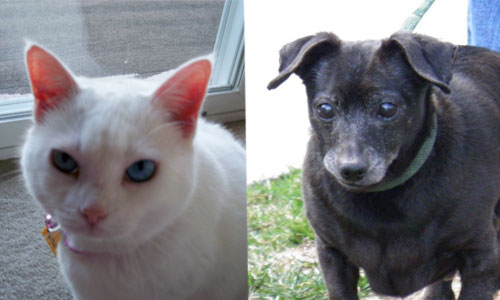

June 2013  My name is Pearl. I am a rescue cat & a very lucky Lady. I came to my Human after 5 years in a foster home. I am very vocal & nosey. I have 1 human & 1 dog for my staff. I am my humans first cat so I have had to train her. She talks to me all the time but you see I can't hear because I am deaf!!! I LOVE to cuddle with her. My dog is friendly now that we are clear on who is Boss! I groom him also. My name is Clyde. I am a California rescue guy. I am very mellow but back then I was a handful. I do NOT like the cold at all but I have lots of blankets to keep me warm. I now share my home with a cat. I like her now. |